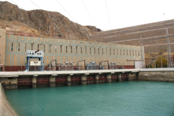
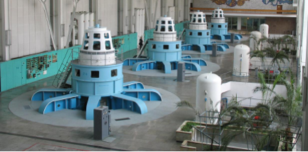
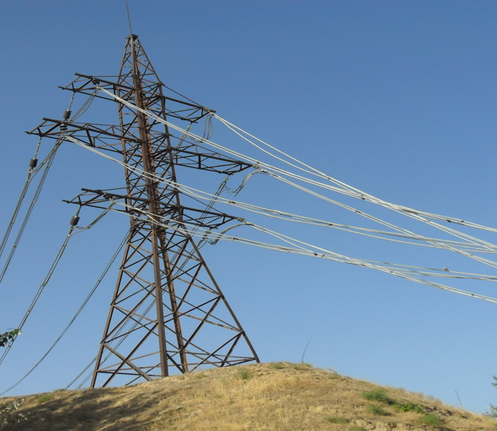
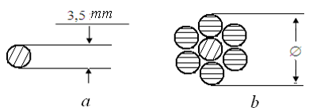
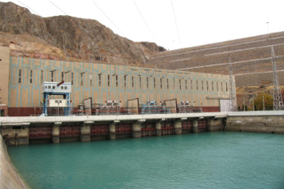
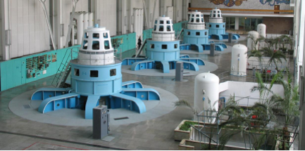
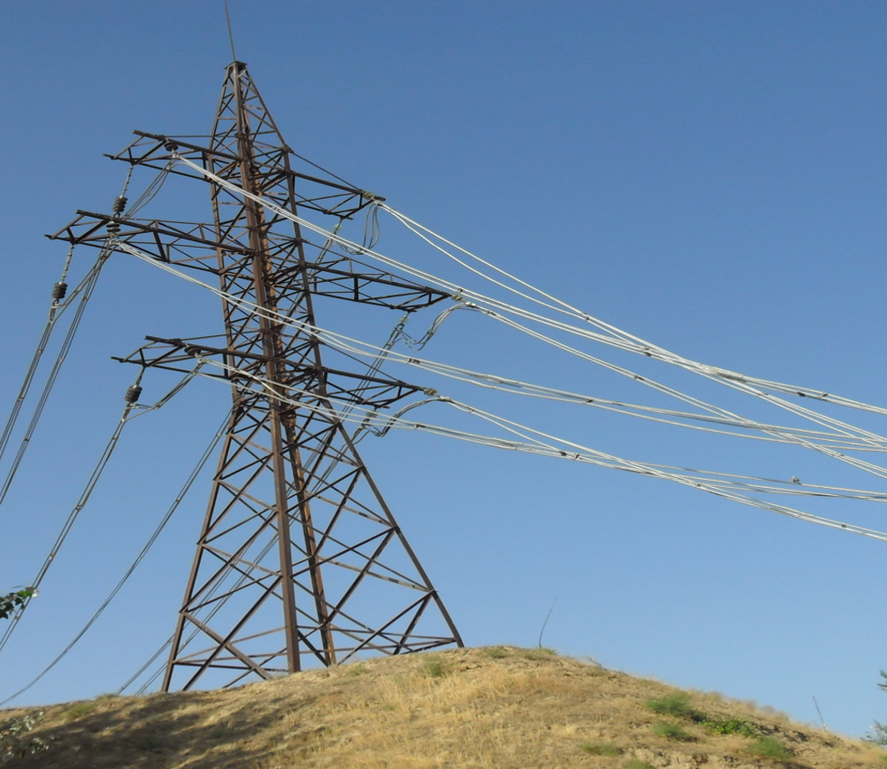
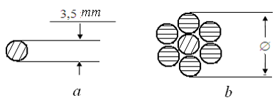

Elektr ta'minoti 1-ma`ruza
ELEKTR TA'MINOTI HAQIDA UMUMIY MA'LUMOTLAR. MA’LUMOTLAR.ELEKTROENYERGETIK KATTALIKLAR HAQIDAGI MA’LUMOTLAR
Reja:
1. Elektr energiyasini ishlab chiqarish qurilmalari.
2. Elektr energiyasini uzatuvchlari
3. Elektr energiyasining iste’molchilari.
4. Elektr enyergiyasining sifati.
Hozirgi kunga kelib suv xo‘jaligi ob’ektlari, ishlab chiqarish korxonalari, suv
ta’minot manbalari, qishloq aholi yashash joylaridagi boshqa ob’ektlarni markazlashgan elektr
tarmoqlaridan elektr energiyasi bilan ta’minlash yakunlangan bo‘lishiga qaramasdan, qo‘shimcha
va yangidan qurilayotgan va qayta jihozlanayotgan, modernizatsiyalanayotgan ob’ektlarning elektr
ta’minotini yechish ehiyoji hali ham mavjud. Shu bilan birga galdagi vazifalar qatorida, ayni
paytda eskirgan, iqtisodiy tomondan zarar keltirayotgan, elektr energiyasi isrofining me’yoriy
ko‘rsatkichlari yuqori, doimiy avariyalar yuzaga kelayotgan, eski elektr tarmoqlarni yangilariga
almashtirish masalasi bugungi kunning dolzarb masalalari qatoridan joy egallagan.
Elektr energiyasining uzluksizligi va sifat ko‘rsatkichlarini yaxshilash va yangi elektr
istemolchilarni energiya bilan ta’minlash muammolarini yechish lozim.
Elektr ta’minoti tizimining har bir bo‘g‘indagi elektroenergetik uskunani ishlab chiqarish
quvvati, uning yordamida bajarilgan ish yoki ishlab chiqarilgan maxsulot biror-bir ko‘rsatkich
bilan baholanadi va u mazkur qurilmaning ish tarzini tavsiflovchi ko‘rsatkichi hisoblanadi.
Elektr energiyasini ishlab chiqarish qurilmalarga: generatorlar, akkumulyator barateyalari va
quyosh fotoelektrik uskunalardan tashkil topgan vositalarning elementlari kiradi.
Elektr energiyasini uzatuvchi qurilmalarga elektr uzatish tarmoqlari (havo va kabel),
kuchlanishni oshiruvchi va pasaytiruvchi transformatorlar, o‘lchov kuchlanish va tok
transformatorlari, elektr tarmog‘ini ulash va ajratish uchun xizmat qiluvchi qurilmalar (moyli,
elegazli, quruq, katta va kichik hajmli o‘chirgichlar;
ajratgichlar, bo‘lgichlar va h.k.) kabi elektrostansiya va podstansiyalarning uskunalari kiradi.
Elektr energiyasining iste’molchilarga – ishlab chiqarishning texnologik jarayonlarida ishtirok
etuvchi: shaxsiy ehtiyoj transformatorlari, elektronasos agregatlari, elektr yuritma yordamida
suvni ochish va yopish maslamalari, nasos stansiyasi, asosiy va yordamchi bino va inshootlarning
elektr isitish, sovutish, mikroiqlim yaratish, suvni tozalash kabi shunga o‘xshash texnologik
jarayonlarida ishtirok etuvchi mashinalar, mexanizmlar va uskunalar kiradi.
O’zgarmas tok generatorlarini tavsiflovchi kattaliklarga: kuchlanish – Volt (V), kilo Volt (kV);
tok – milli Amper (mA), Amper (A), kilo Amper (kA); quvvat – Vatt (Vt), kilo Vatt (kVt), mega
Vatt (MVt); kiradi.
O’zgaruvchan tok generatorlarida tavsiflovchi kattaliklar sifatida:
kuchlanish – Volt (V), kilo Volt (kV), faza kuchlanishi (220 V), liniya kuchlanishi (380 V); tok
– milli Amper (mA), Amper (A), kilo Amper (kA); quvvat – Vatt (Vt), kilo Vatt (kVt), mega Vatt
(MVt); chastota – Gers (Gts); quvvat koeffitsiyenti – aktiv (cos φ) va reaktiv (sin φ, tg φ)
qayd etilgan.


Chorvoq suv ombori | Chorvoq suv ombori Gidro elektrostansiyasi
Akkumulyator batareyalarida elektr energiyasini ishlab chiqarish, elektrolit moddalardan
ajralib chiqadigan elektronlardagi zayadlarning qo‘rg‘oshin,litiy va shunga o‘xshash metal
plastinkalar yuzasida to‘plashiga asoslangan ximoyaviy reaksiyaning mahsuli hisoblanadi


Suyuq ishqorli akkumulyator batareyasi | Dizel generatorining umumiy ko‘rinishi
Suv xo‘jaligi sohsidagi elektr energiyasining iste’molchilari hisoblangan va texnologik
jarayonida ishtirok etuvchi: shaxsiy ehtiyoj transformatorlarida: kuchlanish - yuqori va
past, tok - birlamchi va ikkilamchi cho‘lg’amdagi; aktiv quvvat koeffitsiyenti; sovutish
vositasi (moyli, quruq va h.k.); salt holatdagi va yuklama ostidagi kuchlanish, quvvat va
haroratning ruxsat etilgan isrof miqdori.
ELEKTR ENERGIYASI SIFATI
Rivojlanib, yangilanib borayotgan, va zamonaviy texnologiyalar joriy etilayotgan ishlab
chiqarish jarayonlarda ishtirok etuvchi uskunalar yuqori aniqlikda, to‘xtovsiz ish rejimida
ishlashi talab etilayotganligi bois, uzluksiz va sifatli elektr energiyasi bilan
ta’minlanish ustivor vazifadir. Elektr energiyasining sifatiga baho berishda uni
xarakterlovchi parametrlarga e’tiborni qaratish lozim. Ushbu paramerlarga elektr ta’minot
tizimidagi chastota (f, Gts), kuchlanish (Un, V) ni o‘zgarib turishini hamda elektr
tizimlaridagi faza kuchlanishining nossimetriyasini, sinusoida egri chiziqlarining standart
ko‘rsatgichlardan og‘ishga salbiy ta’sir etuvchi oqibatlar turkumiga kiritish mumkin
Chastotaning juda oz o‘zgarishlari ham elektr mashinalarining ish tartibini yomonlashtiradi.
Chastotaning juda katta o‘zgarishlari (ikki martaga pasaysa) yoritish qurilmalaridagi nur
oqimlari pulsatsiyasining ortishiga, nur taratishning pasayishiga olib kelib ko‘rish
a’zolariga sezilarli darajada salbiy ta’sir ko‘rsatadi. Chastotaning bunday miqdorda
o‘zgarishini faqatgina yirik nosozlik bo‘lgandagina kuzatish mumkin. Elektr tarmoqlaridagi
mo‘tadil sharoitlarda ham juda oz muddatdagi quvvat yetishmovchiligi yoki ortishi ham
chastotaning pasayishiga omil bo‘lib bu hodisa elektr dvigatellar ish faoliyatiga sezilarli
darajada salbiy ta’sir etishi mumkin.
Alyuminiy misga nisbatan bir oz pastroq o‘tkazuvchanlikga ega. Solishtirma
o‘tkazuvchanligi 32 m(Om·mm2, Sm-1) ga teng bo‘lib solishtirma qarshiligi va zichligi
misnikidan keskin farq qiladi ya’ni k16 kgsmm2, zichligi esa, 2,75 gsm3 ga teng.
Alyuminiy ham mis kabi namlik va boshqa salbiy muhitning ta’sirida yuzasida oksidli yupqa
qobiq hosil qiladi. Ammo bu qobiq misnikiga nisbatan zaifroq bo‘lganligi sababli, tashqi
doimiy salbiy ta’sirlar natijasiga bardosh bera olmaydi va nihoyat materialning butkul
yemirilishiga olib kelishi mumkin.


Kuchlanishi 6 kV li A300 markali elektr tarmog‘ining umumiy ko‘rinishi |
Alyuminiy-po‘lat sim o‘tkazgichning konstruktiv tuzulishi; a-bir simli po‘lat
o‘tkazgich; b-alyuminiy po‘lat (AS) o‘tkazgich.
O’tkazgich materialiga bog‘liq holda uning markasi tanlanadi.
Masalan: M – mis, A - alyuminiy, PS - po‘lat simli o‘tkazgich, AS – alyuminiy va po‘lat
simli o‘tkazgich ma’nosini bildiradi. Simning materiali bilan uning ko‘ndalang kesimi
ham belgilanishi mumkin. A16 – alyuminiy sim, 16 mm2 kesim yuzali ma’nosini bildiradi.
Havo liniyalarida quyidagi markadagi eng kichik kesimli simlarni ishlatishga ruxsat
etiladi: alyuminiy simli A16, mis M10, alyuminiy po‘lat (alyuminiy stal) AS16 (alyuminiy
stal, kesim yuzasi 16 mm2), po‘lat simli PTS5 (provod trosoviy stalnoy, kesim
yuzasi 5 mm2) bir tolali po‘lat o‘tkazgichlardan PTS3,5 (provod rosoviy stalnoy, kesim
yuzasi 3,5 mm2).
TOPSHIRIQ
1. Elektr tamog‘idagi kuchlanishning o‘zgarishi elektr energiyasi sifatiga qanday
ta’sir ko‘rsatadi?
2. Elektr iste’molchilarning toifasi deganda nima nazarda tutiladi?
3. 1 – toifali elektr iste’molchilarga qanday ob’ektlar kiradi?


Chastotaning juda oz o‘zgarishlari ham elektr mashinalarining ish tartibini yomonlashtiradi. Chastotaning juda katta o‘zgarishlari (ikki martaga pasaysa) yoritish qurilmalaridagi nur oqimlari pulsatsiyasining ortishiga, nur taratishning pasayishiga olib kelib ko‘rish a’zolariga sezilarli darajada salbiy ta’sir ko‘rsatadi. Chastotaning bunday miqdorda o‘zgarishini faqatgina yirik nosozlik bo‘lgandagina kuzatish mumkin. Elektr tarmoqlaridagi mo‘tadil sharoitlarda ham juda oz muddatdagi quvvat yetishmovchiligi yoki ortishi ham chastotaning pasayishiga omil bo‘lib bu hodisa elektr dvigatellar ish faoliyatiga sezilarli darajada salbiy ta’sir etishi mumkin.
Alyuminiy misga nisbatan bir oz pastroq o‘tkazuvchanlikga ega. Solishtirma o‘tkazuvchanligi 32 m(Om·mm2, Sm-1) ga teng bo‘lib solishtirma qarshiligi va zichligi misnikidan keskin farq qiladi ya’ni k16 kgsmm2, zichligi esa, 2,75 gsm3 ga teng. Alyuminiy ham mis kabi namlik va boshqa salbiy muhitning ta’sirida yuzasida oksidli yupqa qobiq hosil qiladi. Ammo bu qobiq misnikiga nisbatan zaifroq bo‘lganligi sababli, tashqi doimiy salbiy ta’sirlar natijasiga bardosh bera olmaydi va nihoyat materialning butkul yemirilishiga olib kelishi mumkin.

